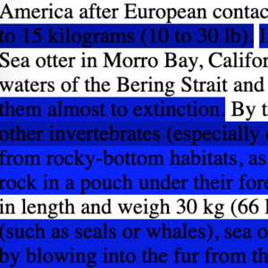
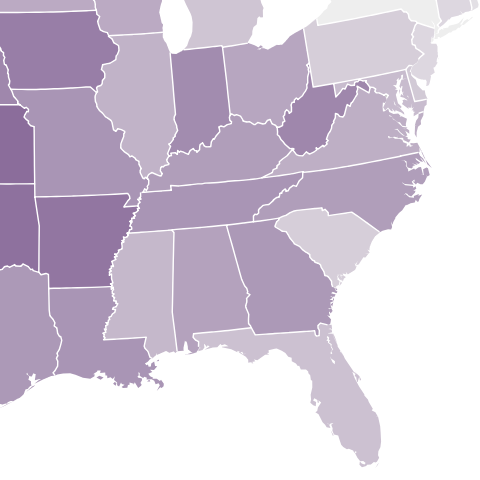

All Downloads and Demos
Wikify Demo
Identify keywords in documents and turn them into Wikipedia-style links

TextRank Demo
Automatically summarize the contents of uploaded documents

GeoLIWC Demo
Visualize geographical distributions of LIWC categories in the United States